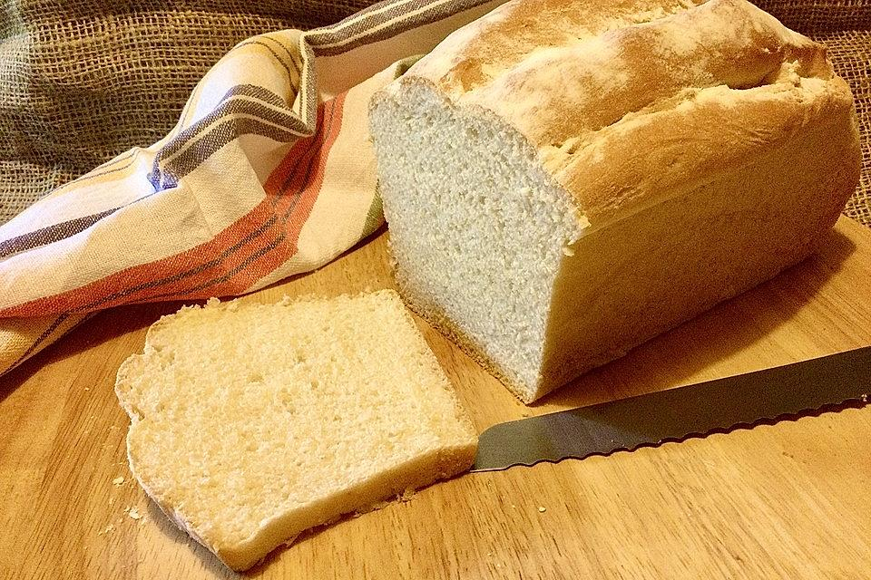

White Bread

Description
White bread is a simple recipe and fantastic for beginners.
It demonstrates how easy it is to make one's bread better than supermarket bread.
Probably, the first tries will be difficult, but with a bit of practise, you can make it perfect.
You can find the original recipe here.
Ingredients
- 40 g yeast
- 1 tbsp sugar
- 300 ml milk, lukewarm
- 40 g butter
- 1 tbsp salt
- 500 g flour
Steps
- Turn on the oven with upper-lower heat 200 degrees.
- Mix the yeast with sugar, flour and milk. Let it rise for a few minutes.
- Add all ingredients and the previous mixture to a bowl.
- Knead and let rise for approx. 40 - 50 min.
- Afterwards, knead the dough again. Then put in a loaf pan and let rise again for 20 minutes.
- Apply a little bit of water to the top of the dough and put it into the oven for 40 to 50 minutes.
Back